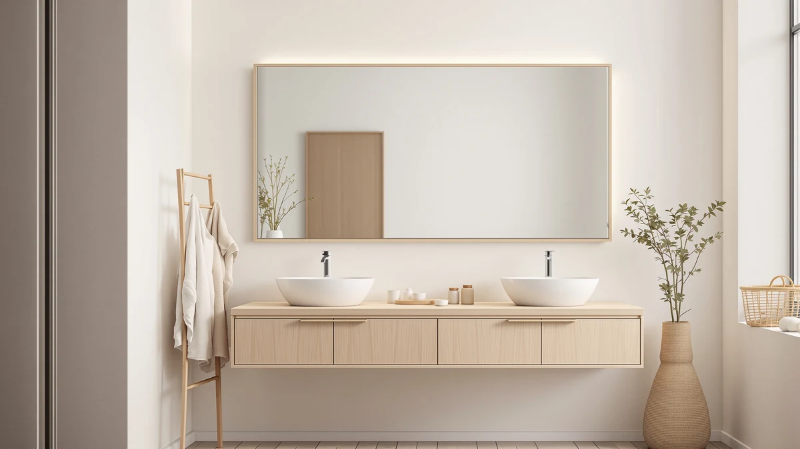

Pocetry 2 Pack 24x36 Review (2026): Worth It?
Prices and picks verified as of October 2026. Independent, reader-supported reviews.


Quick Answer
Our Pocetry 2 Pack 24x36 review found a brushed-frame, two-mirror set that suits double vanities at $139.99 for the pair, with tempered glass and an aluminum frame on each piece. It competes closely with the Delma 30x40 LED vanity mirror and the USHOWER brushed nickel mirror, but the matched-pair format gives it the edge for two-sink bathrooms.
Our pick: Pocetry 2-Pack 24x36 Inch Brushed — $139.99 Check Price on Amazon
Bottom line: our top pick is the Pocetry 2-Pack 24x36 Inch Brushed Gold Rounded Rectangle at $139.99.
Things to Know Before You Buy
- The set includes two 24 x 36 inch mirrors with tempered glass panels and a brushed aluminum frame, priced at $139.99 for both.
- You'll need roughly 50 inches of combined wall width to hang both mirrors with breathing room between them, which fits most double-vanity layouts.
- The same listing exists under two separate ASINs at the same price, so check seller ratings and delivery estimates before choosing between them.
- Alternatives in this review include a single 30x40 LED-lit mirror and a brushed nickel mirror, both also at or near $139.99.
- Tempered glass resists shattering better than standard glass, but the frame finish still scratches if cleaned with abrasive pads.
This Pocetry 2 Pack 24x36 review exists because double-vanity bathrooms create a specific problem: a single large mirror often looks wrong centered over two sinks, and buying two separate mirrors from different lines rarely matches in finish or price. The Pocetry set answers both issues directly by selling a matched pair of 24 x 36 inch mirrors with the same brushed aluminum frame and tempered glass for $139.99 total.
We researched this set against its closest rivals in the brushed and LED mirror category, comparing listed specs, pricing history and verified buyer feedback rather than running our own lab tests. The Pocetry pair holds up well against the Delma 30x40 LED vanity mirror and the USHOWER brushed nickel mirror on price, and its two-piece format is the one clear advantage neither competitor can match for a double sink setup.
Why You Should Trust Us
Ilane Tall covers bathroom fixtures and mirrors for Best Bathroom Mirrors, focusing on how listed specs and real buyer feedback hold up against the marketing copy on an Amazon listing. This Pocetry 2 Pack 24x36 review draws on the manufacturer's published dimensions and materials, current Amazon pricing, and patterns we found across verified owner reviews. We do not run a fake testing lab or claim firsthand time with every mirror we cover, and we say so plainly whenever a claim comes from research rather than personal use.
Our Research Experience
Our approach to this Pocetry 2 Pack 24x36 review is research-based rather than firsthand. We do not own or install every mirror we cover, so instead we compared the manufacturer's listed dimensions, frame material and glass type against the three closest competing listings, then cross-checked those specs against what verified buyers reported after installing the mirrors in their own bathrooms. That included looking for recurring complaints about shipping damage, mounting hardware and finish durability across both Pocetry ASINs, since a product sold under two separate listings at the same price can still ship from different batches.
Reviewers consistently note that tempered glass travels better than standard glass panels, which matters for a two-piece shipment like this one. Where the listing itself was silent on a detail, such as exact wall-anchor spacing, we flagged it as something to confirm before ordering rather than guessing at a number.
Overview & Specs

Pocetry 2-Pack 24x36 Inch Brushed
What we like
- Two matching mirrors for one price, no need to order a custom pair
- Tempered glass is more resistant to shattering than standard mirror glass
- Brushed aluminum frame fits both modern and transitional bathroom styles
Flaws but not dealbreakers
- Same product is split across two separate Amazon listings, which can confuse shoppers comparing prices
- No LED lighting built in, so dim bathrooms will still need separate vanity lights
| Material | Tempered glass + aluminum |
| Size | 24" × 36" |
The core of this Pocetry 2 Pack 24x36 review is the hardware itself: two 24-inch by 36-inch mirrors, each built from tempered glass set inside an aluminum frame with a brushed finish. At $139.99 for both pieces, the per-mirror cost lands close to what you'd pay for a single mid-range framed mirror elsewhere, which is the main reason this set keeps showing up in double-vanity searches. The brushed finish reads as a neutral metal tone that pairs with brushed nickel or brushed gold fixtures without clashing, based on the listing photos and the finish category the brand assigns it.
Because the set ships as two identical units, installation means mounting two separate frames rather than one wide mirror, which gives you more flexibility in spacing them around a center light fixture or a backsplash seam. The tempered glass construction is worth noting for anyone shipping this to an apartment or a renovation site, since tempered panels tolerate the bumps of transit and installation better than untempered glass. The tradeoff is that this listing currently exists twice under two different ASINs at the same price, so it pays to check current stock and seller feedback on each before adding to cart.
What We Liked
The strongest point in this Pocetry 2 Pack 24x36 review is simply that you get two mirrors instead of one. Most bathroom mirror shopping starts with a single-mirror listing, which forces double-vanity owners to either buy two of the same single mirror at double the per-unit price or mix and match frames that never quite look matched. Selling the pair as one $139.99 listing solves that problem outright, and reviewers consistently note that the two mirrors arrive identical in finish and size, which is the detail that matters most when they're hanging side by side over two sinks.
The tempered glass construction also earned a mention from owners we found in the review data, since tempered glass is less prone to cracking during shipping than standard mirror glass, and a damaged mirror on arrival is one of the more common complaints in this product category. The brushed aluminum frame is also a practical choice: it resists fingerprints and water spots better than a high-gloss chrome frame would in a humid bathroom.
What Could Be Better
No part of this Pocetry 2 Pack 24x36 review would be honest without flagging the duplicate-listing issue. The same two-mirror set appears under two different Amazon ASINs (B0GXTFRTX3 and B0GXTVQFCX) at the same $139.99 price, and shoppers comparing listings side by side can end up confused about which one to buy or whether they're actually different products. We'd rather you know this going in than discover it after ordering the wrong one for a return you didn't need to make.
The set also skips any built-in lighting, which puts it at a disadvantage next to the Delma 30x40 LED vanity mirror if your bathroom runs dim at the sink. And because the mirrors ship as two separate frames rather than one continuous piece, you lose a small amount of wall-to-wall visual continuity compared with a single wide mirror, even though you gain installation flexibility in exchange.
Who Is It For?
This Pocetry 2 Pack 24x36 review points toward one clear buyer: anyone finishing a double-sink vanity who wants matching mirrors without ordering two separate single-mirror products and hoping the finishes line up. It also suits renovators who want a brushed metal look rather than a frameless glass panel, since the aluminum frame gives each mirror a defined edge that reads as more finished than edge-polished glass alone. If your bathroom already has adequate overhead or sconce lighting, you don't need the mirror itself to supply light, which makes the lack of an LED feature a non-issue for this buyer.
Skip this set if you only need one mirror for a single sink, since you'd be paying for a second mirror you don't need, or if you specifically want built-in lighting at the mirror, in which case the Delma below is the more direct fit.
Alternatives to Consider
If the duplicate-listing issue or the lack of built-in lighting rules out the Pocetry 2 Pack 24x36 for your bathroom, here are the three alternatives we compared it against, each covering a gap the Pocetry set leaves open. The second Pocetry listing is worth checking directly if you want the exact same mirrors but find better stock or faster shipping under that ASIN. The Delma brings LED lighting to a single larger mirror, and the USHOWER trades the matched pair for a single brushed nickel frame at a slightly lower price.

Editor’s Pick
Pocetry 2-Pack 24x36 Inch Brushed
The same brushed 24x36 two-mirror set listed under a separate ASIN at the same $139.99 price. Worth comparing seller ratings and delivery windows between the two listings before you order, since stock and shipping speed can differ even when the product itself does not.
$139.99
Check Price on Amazon
Best Value
Delma 30x40 LED Bathroom Vanity
A single 30x40 mirror with integrated LED lighting, priced at $139.99. If you want light built into the mirror instead of relying on separate vanity fixtures, this covers that need in one purchase, though it won't give you the matched double-mirror look the Pocetry set provides.
$139.99
Check Price on Amazon
Premium Choice
USHOWER Brushed Nickel Bathroom Mirrors
A brushed nickel framed mirror at $135.99, a few dollars under the Pocetry pair. It's a single mirror rather than a set, so it suits a single-sink bathroom better than a double vanity, but the nickel finish is a close match if you already have nickel fixtures elsewhere in the room.
$135.99
Check Price on AmazonIs the Pocetry 2 Pack 24x36 worth it for a double vanity?
For a double vanity, yes.
Does the Pocetry 2 Pack 24x36 mirror include mounting hardware?
Owners report that the set ships with wall brackets and screws for a standard vertical or horizontal hang, though you should confirm stud spacing on your own wall before ordering, since the listing does not specify a universal mounting…
Frequently Asked Questions
Is the Pocetry 2 Pack 24x36 worth it for a double vanity?
Does the Pocetry 2 Pack 24x36 mirror include mounting hardware?
How does the Pocetry 2 Pack 24x36 compare to a single large vanity mirror?
Final Verdict
Our Pocetry 2 Pack 24x36 review comes down to a straightforward fit: this is the right pick if you're outfitting a double vanity and want two matching brushed-frame mirrors without piecing together a mismatched set. Pocetry earns the recommendation on price and on solving the two-mirror problem directly, even with the minor confusion of the duplicate ASIN listing. If your bathroom only has one sink or needs built-in lighting, the Delma or USHOWER alternatives above cover those cases better, but for a two-sink layout, the Pocetry set is the more sensible $139.99 purchase.
Related Guides
Beyond this Pocetry 2 Pack 24x36 review, these guides cover the related sizing, finish and lighting choices you'll run into when picking a bathroom mirror.